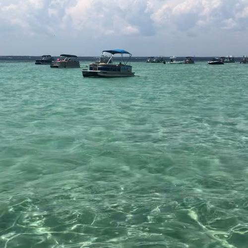
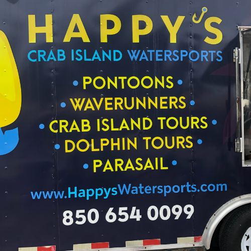
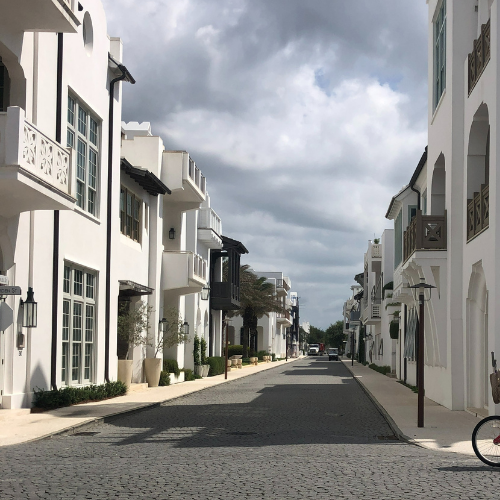

This blog post contains a 'Destination Overview' with the destination's background, activities, lodging options, transportation options, food recommendations and tips;
followed by a 'Detailed Itinerary' with an overview and daily schedule.
Destination Overview
Here is some background knowledge about the destination, along with exciting activities, lodging options, transportation options, food recommendations, and tips for this specific destination.
Background
Destin was founded by Captain Leonard Destin in the mid-19th century and officially became a city in 1984.
Today, Destin is a vacation destination known for its white-sand beaches, clear green waters, and reputation as the "World's Luckiest Fishing Village".
Fun Fact: The unique color of the water is due to sunlight reflecting off the fine, white sand made of Appalachian quartz.
Activities
These are the most exciting things to do at this destination with some important information (what it is, times, dates, costs, links).
In summary, the activities below discussed include HarborWalk Village, Crab Island, Norriego Point, Henderson Beach State Park, Visiting 30A, Gulfarium Marine Adventure Park, Gator Beach at Fudpucker's Beachside Bar and Grill, Okaloosa Island Pier, and other activities like parasailing, dolphin cruises, Baytowne Wharf, mini-golf, deep sea fishing, and pirate cruises.
There are tons of other activities to do in Destin not mentioned, but can be found online.
HarborWalk Village
A boardwalk on Destin Harbor with a host of restaurants, shops, excursion booking kiosks, and other activities like a caricature artist, ziplining, and more. See the website for more details.
Note: Always check the website or contact the business to see if information is still accurate.
Parking: $20 for the day per car. Staying at the Emerald Grande Resort of The Village Inn would mean you could walk to the boardwalk and avoid paying this.
Restrooms: There are public restrooms on-site.
Activity Times: You can walk the boardwalk at any time. It is open 24/7, but businesses on the boardwalk have their own hours.
Cost: $0 per person (to walk the boardwalk)
Tips
The boardwalk is hot, if you have pets, get them pet shoes.
Most excursion boats (like to Crab Island, parasailing, etc.) are at HarborWalk Village so if you are going to Destin for excursions like Crab Island, I would stay at the Emerald Grande Resort ($$$$) or the Village Inn ($$) so you don't have to worry about parking each day (both hotels are within a 10 minute walk of HarborWalk Village).
Destin Harbor Fireworks: Spring fireworks are on Thursdays from March to April 17th. Summer fireworks are on Mondays and Thursdays from May through August. Additional shows are on Memorial Day weekend, Labor Day weekend, and July 4th.
Hours
24/7
Crab Island

Crab Island (early-June 2024 around 1-2 PM - photo taken on my iPhone XS)
Here is a live cam of Crab Island right now so you can see what the water clarity appears to be.
Crab Island can safely be considered Destin's top attraction. It is a sandbar with crystal clear water (in the right conditions) that would make you mistake it for a swimming pool or the Caribbean.
To get to Crab Island, you must take a boat, which will most likely be docked in HarborWalk Village. We booked our Crab Island Tour with Happy's Watersports, who's contact information is below.
They had floating platforms, though they are first-come-first-serve and they fill up quick. They also had paddle boards you could rent for an additional fee (I think $15 an hour, but I am not 100% sure).
Note: Always check the website or contact the business to see if information is still accurate.
Parking: Happy's Watersports operates out of a trailer in a parking lot, which you can park at for ~$10; or avoid parking by staying at the Emerald Grande Resort OR the Village Inn and walk right over.

Happy's Watersports Trailer
Restrooms: The boat had a small restroom on board.
Activity Times: The 3-hour Crab Island Tour for us was 1 PM - 4 PM. I am not sure when the 4-hour Crab Island Tour was.
Cost: ~$60 per person, plus taxes, fees, a tip, and any add-ons (like renting paddle boards, etc.). For two people, it was about $160 total (and we didn't rent paddle boards or anything).
Tips
The clarity of the water depends on the weather and tides. Here is a website you can find tide information.
The 3-hour tour was more than enough for us when we went. By the end of the 3rd hour we were ready to go and I was glad we didn't do the 4-hour one. There isn't much to do, and after the 'wow' factor wears off, you are just stuck chilling until it's time to leave, and the water was not as clear in the last hour as the tides change.
Make sure you bring a sun-hat/ball-cap, sunglasses, and sun-screen because the sun is tough out there, especially from 1 PM - 4 PM!
If you enjoy snorkeling (or have kids) make sure to bring goggles, a snorkel, and a small, *sturdy* (wooden-handled) fish net because there are lots of little fishes that swim in the sea vegetation that are fun to try and catch. The tour boat will have goggles, snorkels, and fish nets, but the fish nets are flimsy, and having your own goggles and snorkel is more ideal.
Bringing a mini-cooler with water is highly recommended, and potentially some refreshing snacks like fruit. Be sure to check what other items are allowed and which items aren't (i.e. glass, etc.)
You might see dolphins on the way to Crab Island and during other excursions, so I wouldn't book a Dolphin Cruise until maybe your last day if you haven't seen any dolphins.
Hours
Crab Island is technically open, 24/7; but most excursion businesses close around 5 PM. Happy's Watersports is open 8:30 AM - 5 PM Sunday-Saturday.
Norriego Point
Norriego Point is a popular snorkeling spot. We snorkeled around the rocks and saw tons of fish and even a sea turtle swimming along the rocks.
Note: Always check the website or contact the business to see if information is still accurate.
Parking: Street parking - The parking lot at Norriego Point Beach Access and Park is currently closed due to construction, so you currently there is only limited street parking, and you have to pay (I don't remember the cost, probably $20 for the day). Parking was very limited the times we went (2024 + 2025) and we didn't get a spot the first trip, which was a bummer because we were leaving the next day so we didn't get to go. I highly recommend taking a taxi or uber so you don't have to worry about parking.
Restrooms: The ocean.
Activity Times: You can go at any time. It is open 24/7.
Cost: $0 per person for beach access, but you have to pay to park or get there via taxi/uber
Tips
Take an uber or taxi, I wouldn't even try to find a parking spot. If you don't find one, you have to wait (and waste time waiting around) or you don't get to go (happened to us the first time). Click here to see taxi options.
Hours
24/7
Henderson Beach State Park
Henderson Beach is a peaceful white-sand beach that is less crowded (at least when we went (8 AM - 10 AM early June 2024 + 2025)) and absolutely stunning.
Walking to the shore line felt like I was approaching the gates of a tropical paradise.
Henderson Beach State Park (June 2024)
I had never seen water this clear other than a swimming pool so I was absolutely blown away as I approached the shoreline. The photos don't do it justice.
Note: Always check the website or contact the business to see if information is still accurate.
Parking: $6 per car (it is well worth it)
Restrooms: There are public restrooms, and you have the ocean.
Activity Times: Open 8 AM til sundown 365 days per year.
Cost: $0 per person for beach access, but $6 to park.
Tips
I recommend going between 8 AM - 10 AM for the smallest number of people.
The beach doesn't have umbrellas, so bring your own umbrella/tent along with chairs.
Hours
8 AM til sundown 365 days per year.
Visit 30A
30A is a a scenic county highway in Florida that runs along the Gulf Coast, connecting a series of small, picturesque beach towns like Seaside, Alys Beach, Rosemary Beach, and Grayton Beach. 30A is about an hour from Destin, but it is well worth the drive to see these extremley cute beach towns.
Here is a map of 30A.

Alys Beach Town - 30A (June 2025)
Every street in 30A is a photo-op. Everything looks so photo-ready. It looks like a movie scene, which is probably why it was one. The Truman Show starring Jim Carrey was shot in Seaside.
30A is very bike-friendly. We rented bikes from 30A Bike Rentals for the day (we did the Park n' Ride Special). The rental place is directly beside the Timpoochee Trail, which runs right beside 30A and goes through all the beach towns.
We hopped on the trail and biked all the way to Rosemary Beach (one of the last beach towns on 30A).
To give you an idea of where the rental is in relation to the beach towns, on this map, 30A Bike Rentals is right beside Deer Lake State Park between Eastern Lake and Deer Lake.
It's around a 5 mile trip from 30A Bike Rentals to Rosemary Beach.
If you bike without stopping, it takes around 30 minutes, but we took our time and got lunch at Pizza By the Sea in Seacrest and enjoyed the towns so it took a couple hours.
Contact (30A Bike Rentals)
5399 E County Hwy 30A Suite 9, Santa Rosa Beach, FL 32459
Note: Always check the website or contact the business to see if information is still accurate.
Parking: If you do the Park n' Ride with 30A Bike Rentals, you can park your car in their parking lot on a first-come, first-serve basis (they had maybe 10 spots, so get there right as they open). If you decide to drive into 30A, you'll have to find street parking, but it is limited and might be hard to find.
Restrooms: If you need to potty on your bike ride, you can find a local business in the beach towns.
Activity Times: 30A Bike Rentals opens 9 AM and closes 5 PM most days, and you'd probably need to get there at least 15 minutes before they close.
Cost: ~$25 per non-electric bike. ~$60 per e-bike.
Tips (if you bike)
The bikes at 30A Bike Rentals do come with baskets and bike chains. There are tons of places to chain up your bike and explore.
A lot of the beach access in the beach towns is private and you need a resident code to enter. Rosemary Beach is private, Seacrest Beach is private, and Alys beach is private. Inlet beach has private and public access. Public access for Inlet beach is right off Winston Ln I believe, which is right off the Timpoochee Trail past Rosemary Beach going east.
The sun is intense, especially when you are biking out in it. Wear a long-sleeved shirt if you bike and a ball-cap/sun-hat that won't blow off your head as well sunglasses and lots of sunscreen.
Bring a *small* bag with water bottles and some refreshing snacks (like fruit cups) to stay hydrated and refreshed.
Bring towels in case you decide to find a public beach access point.
Hours
30A Bike Rentals is open 9 AM - 5 PM Sun-Sat.
Gulfarium Marine Adventure Park (for the opportunity to pet and feed marine animals)
Gulfarium is a marine animal park with dolphins, sea lions, harbor seals, penguins, manatees, reptiles (gators, crocodiles, snakes, and others); sharks (nurse sharks, Epaulette sharks, Bonnethead sharks, and White-spotted bamboo sharks); a touch tank with horseshoe crabs; and some other critters.
There are opportunities to feed and pet the dolphins, sea lions, harbor seals, and other animals. The park calls these opportunities 'animal encounters.'
Find animal encounter information here.
Contact
1010 Miracle Strip Pkwy SE, Fort Walton Beach, FL 32548
Note: Always check the website or contact the business to see if information is still accurate.
Parking: Parking is free in their parking lot.
Restrooms: There are restrooms.
Activity Times: The park is open 9 AM - 4:30 PM Sun-Mon. Admissions closes at 3:30 PM. Closed Thanksgiving and Christmas. There are animal presentations throughout the day (link). Each animal encounter has it's own specific time, so research times for the encounter you want to do on the website.
Cost: ~$35 general admission each person. ~$44/person for 5-minute Dolphin Encounter. ~$48/person for 10-minute Sea Lion Encounter. ~$48/person for 10-minute Harbor Seal Encounter.
Tips
The Harbor Seal encounter (Discover Harbor Seals) is at 10:30 AM daily last time I checked on 11-27-2025. (link)
The Dolphin encounter (Discover Dolphins) is at 10:45 AM and 2:45 PM daily last time I checked on 11-27-2025. (link)
The Sea Lion encounter (Discover Sea Lions) is at 1:30 PM daily last time I checked on 11-27-2025. (link)
If you wanted to do all the encounters above you could. Harbor Seals at 10:30 AM; Sea Lions at 1:30 PM; Dolphins at 2:45 PM.
If you want to do the alligator encounter (Discover Gators) DON'T and go to Fudpucker's Gator Beach instead. It's free admission and they also do gator shows that you don't have to pay $40 for. You can buy sticks to feed to gators with too. You can also hold a baby alligator and get your picture taken doing it. See more about Gator Beach below.
Hours
9 AM - 4:30 PM Sun-Sat. Admissions close at 3:30 PM.
Gator Beach at Fudpucker's Beachside Bar & Grill
Gator Beach is an alligator establishment that has tons of alligators from babies up to young adults. Admission is free, and you can buy a photo with you holding a baby alligator and food sticks to feed the gators from the deck (do this instead of the Gulfarium Discover Gators activity).
Gator Beach is below a restaurant, so grab lunch or dinner before or after your encounter with the alligators.
Gator Beach has *free* alligator shows daily starting at noon. They will tell you about the gators and feed them.
Find the gator show schedule here.
You can also do the Gator Beach Discovery Tour. Read about it here.
You can also do the Gator Experience VIP Tour. Read about it here.
Note: Always check the website or contact the business to see if information is still accurate.
Parking: Parking is free in their parking lot.
Restrooms: There are restrooms.
Activity Times: Last time I checked on 12-01-2025, gator shows were at 12:00 PM, 2:00 PM, 4:00 PM, and 6:00 PM.
Cost: Admission to Gator Beach is free. The gator shows are free. Photos will probably cost around $10-$30. I forgot how much feed sticks cost (probably $5-$10).
Tips
If you don't plan to do a special tour, I'd go to Fudpucker's/Gator Beach at 4:00 PM in time for a gator show; then get your photos taken, then go to dinner.
Hours
11 AM - 8 PM Sun-Sat
Okaloosa Island Pier (for shark watching)
Whenever I go to the beach, I always want to see a SHARK. Not a nurse shark, a SHARK-SHARK. After doing some research, it sounds like Okaloosa Island Pier is a good place to spot a tiger shark.
Unfortunately, I didn't research the topic until after our last trip, so I don't know if you will see a tiger shark, but it's worth a shot.
Next time I go to Destin I will definitely be going to the Okaloosa Island Pier.
Okaloosa Island Pier is a fishing pier, so there is bound to be sharks present with all that bait being thrown into the water.
Note: Always check the website or contact the business to see if information is still accurate.
Parking: There is a large, free parking area directly in front of the Okaloosa Island Pier that can fill up quickly, especially during peak times. Visitors are advised to arrive early and avoid parking in the restaurant's fenced-off area or on the street to prevent towing. Additional public beach access points with parking, restrooms, and showers are located nearby along Santa Rosa Boulevard.
Restrooms: There are restrooms.
Activity Times: The best time to see a shark is dawn or dusk. The pier is open 5 AM - 9 PM.
Cost: It's ~$2 to get on the pier with a walking pass. Fishing requires additional fees that can be found on the website here.
Tips
If you want to see a shark, go at dawn or dusk.
If you don't want to worry about not being able to park, take a taxi or Uber.
Hours
5 AM - 9 PM Sun-Sat
Other Activities
Here are some other fun activities that you can do in Destin.
Parasailing: Walk the boardwalk in HarborWalk Village and find a parasailing excursion or look one up online. Don't recommend if you have a true fear of heights.
Dolphin Cruise: You are bound to see dolphins during other water activities, so I'd wait til the last day to book a dolphin cruise.
Baytowne Wharf: A nice village with boutiques, eateries, galleries and nightlife; along with a schedule of outdoor activities you can find here.
Rainforest Black Light (Mini) Golf and Arcade: Around $15 per person.
These are the best places to stay based on why you are visiting, and how far they are from popular excursions.
Emerald Grande Resort ($$$$)
Star Class: 3-star
Est. Rate: $500-$800/night (depending on your suite) plus tax and fees
Highlights:
This resort is located right in HarborWalk Village, meaning most Destin excursions will be right outside your door.
Most suites have kitchens, multiple full bathrooms, and a host of other amenities that make it more like you are staying in an apartment than a hotel room. Amenities can be found here on the website.
Note: Always check the website or contact the business to see if information is still accurate.
Parking: On-site parking included in your stay.
Notes: Gratuity isn't included in the package deals.
Hours
NA
To HarborWalk Village: It's on HarborWalk Village, 0.1 mile away.
To Crab Island: You can see Crab Island from some rooms. Happy's Watersports' loading dock is a 5-10 minute walk up the boardwalk.
To Norriego Point beach access: 4.2 miles - ~20 min drive
To Henderson Beach State Park: 4.3 miles - ~20 min drive
To Gulfarium Marine Adventure Park: 5.4 miles - ~20 min drive
To Gator Beach at Fudpucker's: 4.3 miles - ~20 min drive
To Okaloosa Island Pier: 5.4 miles - ~20 min drive
To 30A Bike Rentals: 28.9 miles - ~60 min drive
The Village Inn of Destin ($$)
Star Class: 2-star
Est. Rate: $70-$120 (depending on the time of year) plus tax and fees
Highlights:
This hotel competes with the Emerald Grande in terms of location (it's right up the street, a 10 minute walk away from HarborWalk Village) but it is half the price per night.
It includes breakfast and has what you need. This is the best option for those who want to experience what Destin has to offer on a budget.
Note: Always check the website or contact the business to see if information is still accurate.
Parking: On-site parking included in your stay.
Notes: The hotel is not one I would want to lounge around in during the day (it's no resort), but it has what you need to enjoy Destin (mini-fridge, bed, bathroom, couch, dresser drawers, etc.); and the location combined with the cost make it all worth it. I would not stay here if the cost is more than $150 per night, I'd find a better hotel at that rate.
Hours
NA
To HarborWalk Village: 0.4 miles - ~3 min drive - ~10 min walk
To Crab Island: Happy's Watersports' trailer is a 1-150 minute walk up the road.
To Norriego Point beach access: 3.7 miles - ~20 min drive
To Henderson Beach State Park: 3.9 miles - ~20 min drive
To Gulfarium Marine Adventure Park: 5.4 miles - ~20 min drive
To Gator Beach at Fudpucker's: 3.8 miles - ~20 min drive
To Okaloosa Island Pier: 5.5 miles - ~20 min drive
To 30A Bike Rentals: 28.5 miles - ~60 min drive
Motel 6 Destin ($$)
Star Class: 2-star
Est. Rate: $70-$120 (depending on the time of year) plus tax and fees
Highlights:
This is a budget-friendly option, though if you can, the Village Inn is in a better location, though this Motel 6 is a bit nicer quality-wise compared to the Village Inn.
Note: Always check the website or contact the business to see if information is still accurate.
Parking: On-site parking included in your stay.
Notes: This hotel has positive views.
Hours
NA
To HarborWalk Village: 0.7 miles - ~4 min drive - ~20 min walk
To Crab Island: Happy's Watersports' trailer is 0.7 miles - ~4 min drive - ~20 min walk
To Norriego Point beach access: 3.6 miles - ~20 min drive
To Henderson Beach State Park: 3.8 miles - ~20 min drive
To Gulfarium Marine Adventure Park: 5.8 miles - ~20 min drive
To Gator Beach at Fudpucker's: 3.7 miles - ~20 min drive
To Okaloosa Island Pier: 5.8 miles - ~20 min drive
To 30A Bike Rentals: 28.4 miles - ~60 min drive
Destin Inn and Suites ($$$)
Star Class: 2-star
Est. Rate: $70-$280 (depending on the time of year - summer is upper range) plus tax and fees
Highlights:
This is a budget-friendly option, though if you can, the Village Inn is in a better location, though this hotel is a bit nicer quality-wise compared to the Village Inn.
Contact
713 Harbor Blvd, Destin, FL 32541
(850) 650-2236
Note: Always check the website or contact the business to see if information is still accurate.
Parking: On-site parking included in your stay.
Notes: This hotel has positive views.
Hours
NA
To HarborWalk Village: 1.5 miles - ~5 min drive - ~40 min walk
To Crab Island: Happy's Watersports' trailer is 1.4 miles - ~5 min drive - ~30 min walk
To Norriego Point beach access: 3.4 miles - ~20 min drive
To Henderson Beach State Park: 3.6 miles - ~20 min drive
To Gulfarium Marine Adventure Park: 6.6 miles - ~20 min drive
To Gator Beach at Fudpucker's: 3.5 miles - ~20 min drive
To Okaloosa Island Pier: 6.6 miles - ~20 min drive
To 30A Bike Rentals: 28.2 miles - ~60 min drive
Transportation
These are some transportation options between different activities while you are at your destination.
There are certain excursions I do not recommend driving yourself to because parking can be scarce. I am specifically talking about Norriego Point, which we couldn't go to our first time to Destin because parking was so scarce and we were leaving the next day! At the time I didn't think to take a taxi or Uber, which I recommend doing when going to Norriego Point. Here are some taxi options in the Destin area.
Destin Sunrise Taxi
Est. Rate: ~$4/mile (8 miles cost around $30 for our trip)
Notes:
I don't remember getting a confirmation email when I booked online, so I ended up calling them anyways. I would just book via call instead of using the website.
Notes:
This water taxi does NOT go to Crab Island, but they can pick you up and take you basically anywhere along Destin Harbor, including Norriego Point.
For now, here are some unique tips for this specific destination.
Best time to go:
For clear water, avoid going to Destin after heavy storms and go to the water during high tide. The best weather for water activities is late-May to mid-June, and mid-August to early-September. June and July can be too hot in my opinion, even for the water.
In my frank opinion, if the water isn't clear, driving 15-hours isn't worth it...
Here is a live cam of Crab Island and other spots right now so you can see what the water clarity appears to be.
Definitely bring beach chairs and a beach tent, sun-hats/ball-caps, sunglasses, and tons of sunscreen if you plan to sit on the beach yourself or while you watch your kids. I'd also bring a long-sleeved shirt or multiple.
For fewer people, don’t go for Memorial Day or Labor Day.
Sharks are attracted to metal, so taking jewelry off in the water might make you less of a shark target...
Detailed Itinerary
Overview
If text is highlighted red it indicates an activity you should book ahead of time. If text is highlighted yellow it indicates money being spent to help you keep track of your budget.
Destination: Destin, Florida
This itinerary includes these activities:
Budget:
Travelers: 2 adults
Distance: From Northern VA (15-16+ hours there and 15-16+ hours back - 950 miles there and back - 1,900 miles total)
Weekdays: get there Sunday, Monday, Tuesday, Wednesday, leave Thursday
Travel Method to and from Destination: Car
$40 per full tank - 6 full tanks total - $240 total estimate
Travel Method at Destination: Car
$40 per full tank - 1 full tank total - $40 total estimate
Hotel: The Village Inn of Destin (215 Harbor Blvd, Destin, FL 32541 - (850) 837-7413)
Packing: Always pack the day before you leave for big trips like this. Other than your usual items (clothes, toiletries, shoes) make sure you pack…
*Waterproof* digital watch: My biggest recommendation if you will be in charge of the schedule…I don’t like checking my phone for the time to stay on schedule, so I’d recommend a WATERPROOF digital watch which is extremely more convenient than pulling your phone out over and over again 100 times (and dropping it in the process). When you have activities planned and need to keep track of time, it becomes more practical for a watch…
Long-sleeved shirts: It’s counter-intuitive, but long-sleeved shirts help with the sun…and you’re going to sweat anyways…
Sunscreen: Don't forget!
Sunglasses
Flip-flops / sandals: Don't forget them!
Sneakers: For the boardwalk, sneakers might be more comfortable than sandals...
Sun-hat or ball-cap: Absolutely needed if you will be outside a lot. The sun beaming on your face will get old real quick…
Small bag: To carry stuff in while in boats, biking, etc.
Snorkel, goggles, flippers, etc.: If you go to Norriego or Crab Island, there will be tons of little fish, it's nice to have goggles and snorkels.
*Small*, *sturdy* (wooden handle) fish nets: At Crab Island, there are tons of little fish in the sea grass that are fun to try and catch for kids and adults. The boat will have some fish nets with plastic handles that bend too easily.
Beach chairs
Beach tent/umbrella: If you're sitting on the beach, you NEED a tent or umbrella or you will only last 20 minutes before you are baked to a crisp.
Sand toys (if applicable)
Umbrella + poncho: Florida weather is bi-polar.
Waterproof phone protector: My husband had his phone plunged in the water while we were in Destin…you don’t think it’ll happen to you until it does…
Mini cooler: It is not essential, but it's super beneficial, especially for Crab Island and going to the beach. Pack it with refreshing snacks (fruit cups, etc.) and cold drinks.
HDMI cable + laptop: I always bring these so I can plug my laptop into the hotel TV and watch what I want.
Food: For this itinerary, since the budget is on the smaller side, eat lunch at the hotel two of the four days and eat dinner out (breakfast is for free at the hotel).
Cooking Tools: The Village Inn hotel has a microwave.
Beefaroni/Ravioli/Ramen/Any microwavable food that will fit in mini-fridge or is non-perishable (2 cans per day x 2 adults = 4 cans per day x 2 days = 8 cans x $2/can = $16)
Canned peaches (15oz) (2 cans per day x 2 adults = 4 cans per day x 2 days = 8 cans x $2/can = $16)
Granola bars: $10
Drinks:
40 case Great Value 16.9oz water bottles $10
10 ct Great Value electrolyte drink mix powder ($2/box x 2 boxes = $4)
$859 spent so far
Day 1 (Sunday): Getting There
4:30 AM - 5:00 AM
Get up, eat a quick breakfast or take it on-the-go, pack the car, pack snacks, use the bathroom, and prepare to leave.
5:00 AM - 11 AM (6 hrs)
Drive to get gas, drive to the destination, but stop for lunch at 11 AM.
Prepare to go on your 3-Hour Crab Island Tour with Happy's Watersports
Bring: cooler w/ snacks, drinks; sunscreen; sunglasses; snorkel and goggles; fish nets**; Pack cooler w/ snacks drinks (make sure you don’t bring things you can’t - check with business)
12:30 PM - 12:50 PM
Walk to the Happy's Watersports trailer to check-in for your 3-Hour Crab Island Adventure Tour and wait at the loading dock.